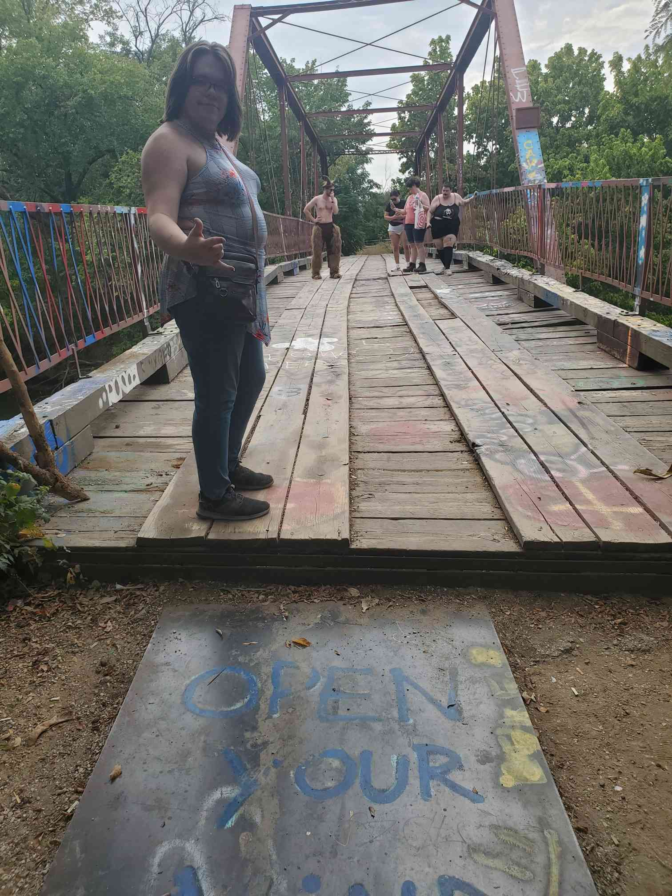
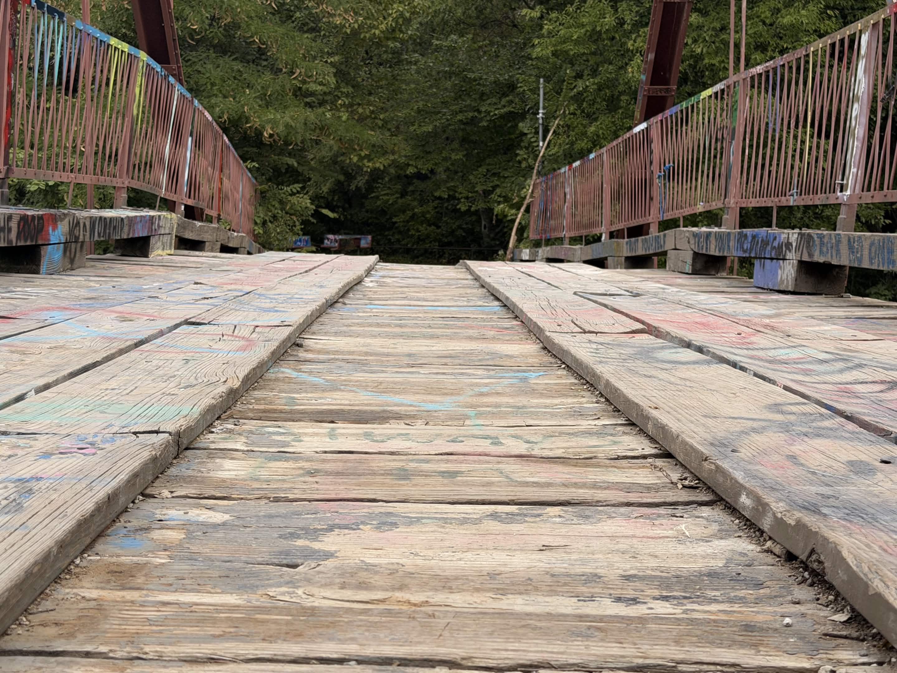
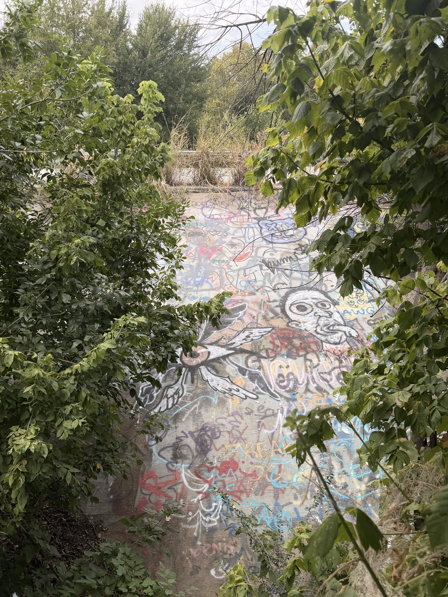
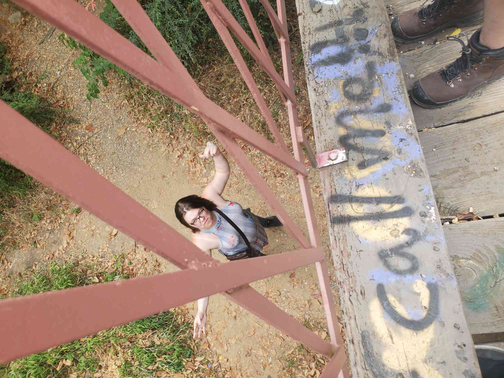
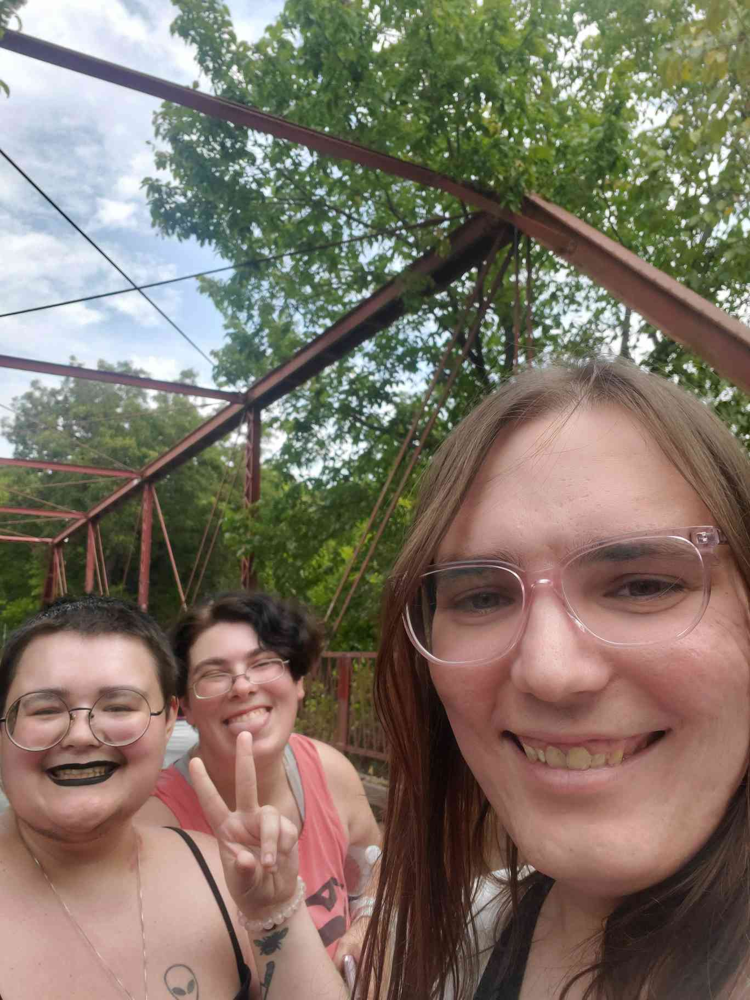
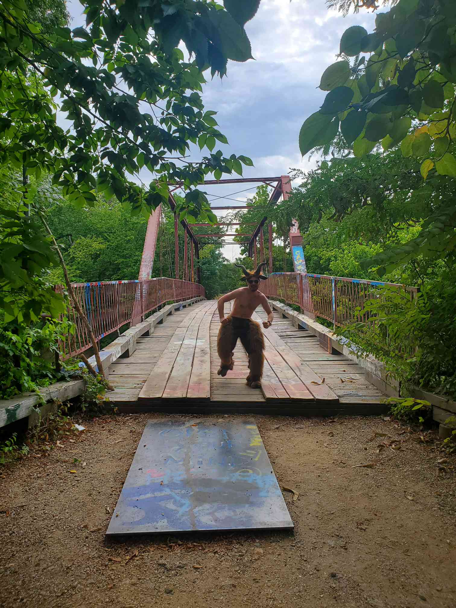
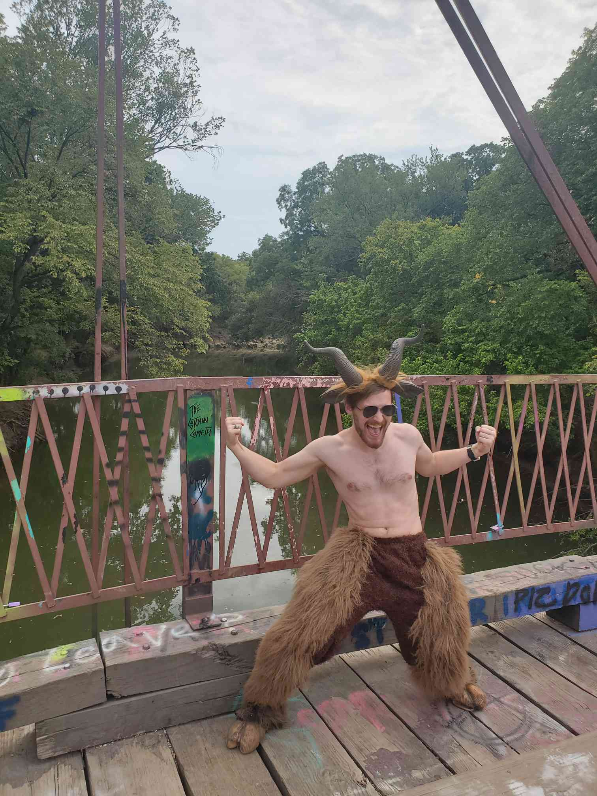
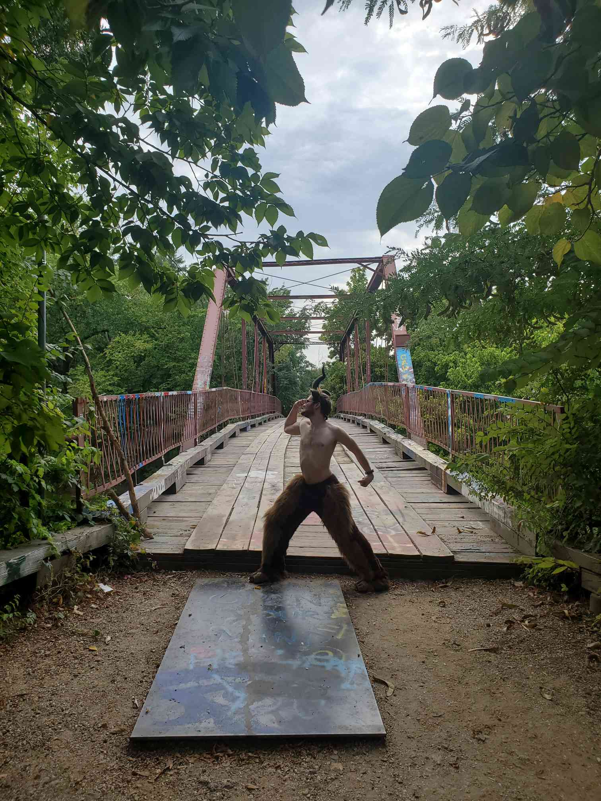
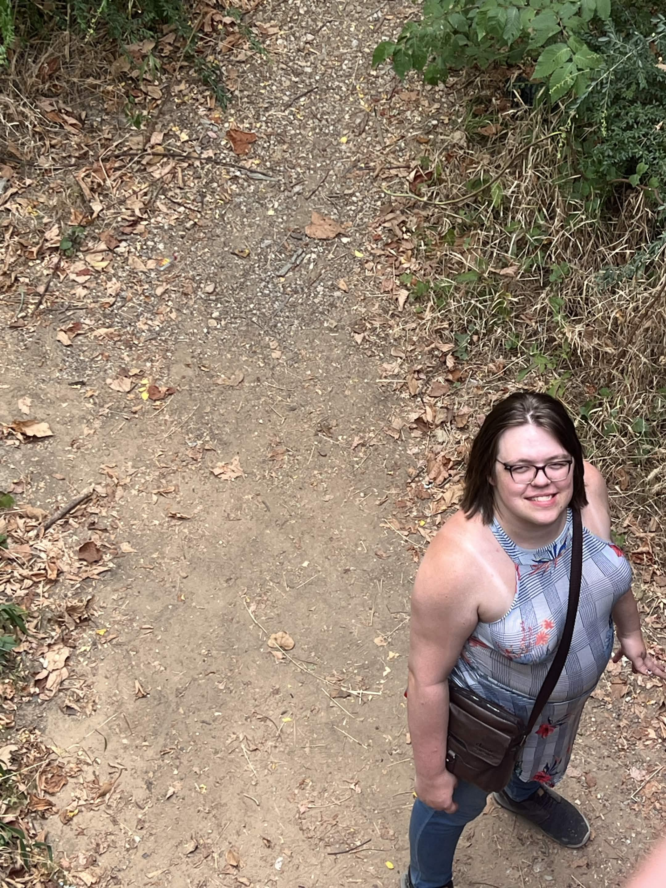

A lot has happened. Almost a month has passed since I really documented anything.
We helped watch Adam a few more times. I've had plenty of crash-outs. I've been getting laser treatments, and figuring out name change stuff for my SSN and Birth Certificate. (The final steps)
I had a job interview but it didn't really go anywhere.
...I don't want to get a job anyway.
Last Saturday we went to Goat Man's bridge. I had a lot of fun. I got to know Jen a little better. She and Colin are a blast to hang out with.









On thursday I'm going to a Full Moon party with Jen and Rose, hosted by Jack. I'm looking forward to it.
Anyway I've been working on this site for a while now so I'm checking out. See ya later.